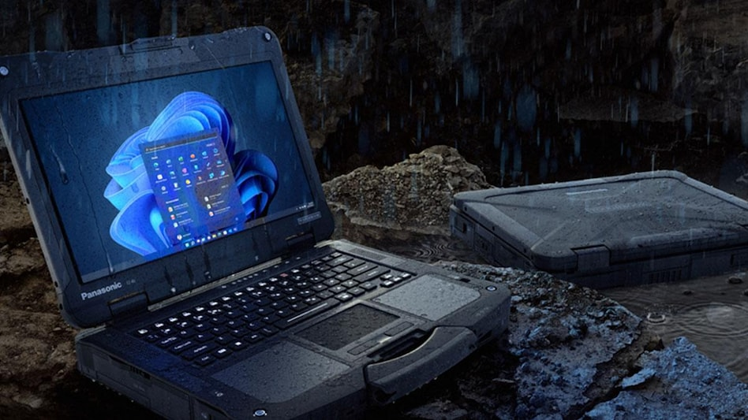

DigiNews
DigiNews
تمامی حقوق این سایت برای دیجی نیوز محفوظ است. نقل مطالب با ذکر منبع بلامانع است.
copy Right© 2022 DigiNews News Agancy, All rights reserved

لپتاپ جانسخت و ماژولار Toughbook 40 پاناسونیک با قیمت نجومی معرفی شد
پاناسونیک لپ تاپ جدیدی به نام Toughbook 40 معرفی کرده که طراحی ماژولار فوقمقاوم دارد، مجهز به پردازندهی نسل یازدهمی اینتل است و در کانفیگهای متنوع به بازار میآید.
جدیدترین لپ تاپ فوقمقاوم پاناسونیک که Panasonic Toughbook 40 نام دارد مخصوص شرکتهای نظامی و ادارات پلیس است چون دربرابر انواع عوامل خارجی از خود مقاومت نشان میدهد و طراحی ماژولار دارد.
براساس آنچه ZDNet مینویسد، لپ تاپ جدید پاناسونیک بدنهای از جنس آلیاژ منیزیم دارد و از گواهیهای متعدد نظیر IP66 برای مقاومت دربرابر آب و گردوغبار، استاندارد نظامی MIL-STD-810H برای مقاومت دربرابر درجه حرارت بالا و موارد دیگر استفاده میکند.
پاناسونیک میگوید لپ تاپ جدیدش از آزمون رطوبت و ارتعاش سربلند بیرون آمده و پس از سقوط از ارتفاع ۱٫۸ متری با مشکل مواجه نشده است. لپ تاپ ۱۴ اینچ Toughbook 40 طراحی ماژولار دارد و کاربر میتواند فسمتهای مختلف این لپ تاپ را تغییر دهد. این سبک طراحی باعث شده Toughbook 40 دارای مجموعاً ۷۰ کانفیگ مختلف باشد.
خریداران لپ تاپ Toughbook 40 میتوانند باتری اصلی، رم، درایو SSD، لبهی سمت راست و سمت چپ، پنل پشتی و استراحتگاه کف دست دستگاه را ارتقا دهند. با عوض کردن پنلهای مختلف میتوان در این لپ تاپ از SSD و باتری ثانویه، درایو نوری، کارتخوان هوشمند، حسگر اثر انگشت و تنوع بالایی از درگاههای مختلف استفاده کرد. اگر این درگاهها کافی نباشد کاربر میتواند سراغ استفاده از یک هاب بهخصوص برود که درگاههای پرتعدادی دارد.
پاناسونیک همچنین تنوع بالایی از لوازم جانبی نظیر پایهی مخصوص وسایل نقلیه و شارژر باتری چهارتایی دردسترس قرار میدهد. پاناسونیک میگوید لپ تاپ Toughbook 40 با یک بار شارژ تا ۱۸ ساعت دوام میآورد. در صورتی که باتری دوم را روی دستگاه قرار دهید، شارژدهی دو برابر افزایش پیدا میکند.
لپ تاپ ۳٫۳۵ کیلوگرمی Toughbook 40 مجهز به سیستمعامل ویندوز ۱۱ پرو است و از پردازندهی نسل یازدهمی سری Intel Core i5 vPro و Intel Core i7 vPro بههمراه ۱۶ گیگابایت رم (قابلارتقا به ۶۴ گیگابایت) و ۵۱۲ گیگابایت درایو SSD (قابلارتقا به دو ترابایت) استفاده میکند.
واحد گرافیکی در این لپ تاپ از نوع مجتمع است (Intel UHD یا Iris Xe) و نمایشگر لمسی دستگاه وضوح Full HD دارد. پاناسونیک میگوید این نمایشگر بهصورت خودکار وارد حالت لمسی میشود و با قلم، انگشت، دستکش یا حتی دست مرطوب کار میکند. روشنایی مانیتور ۱٬۲۰۰ نیت اعلام شده تا بتوان از لپ تاپ در زیر نور مستقیم خورشید استفاده کرد.
DigiNews
DigiNews
تمامی حقوق این سایت برای دیجی نیوز محفوظ است. نقل مطالب با ذکر منبع بلامانع است.
copy Right© 2022 DigiNews News Agancy, All rights reserved